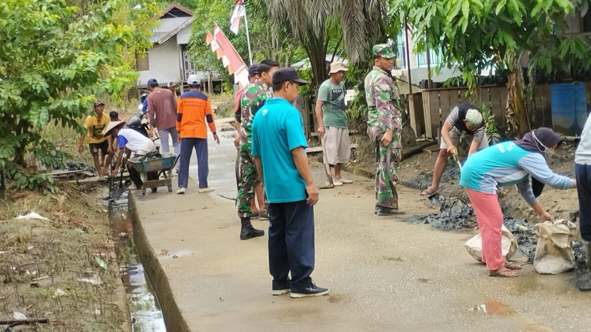
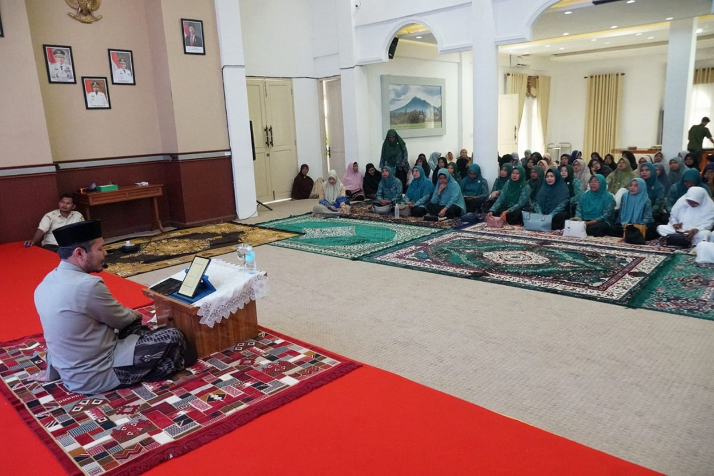
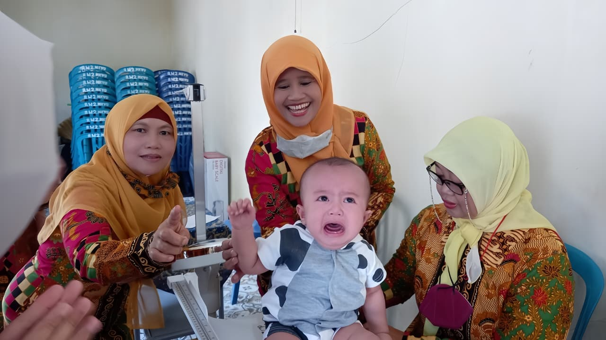
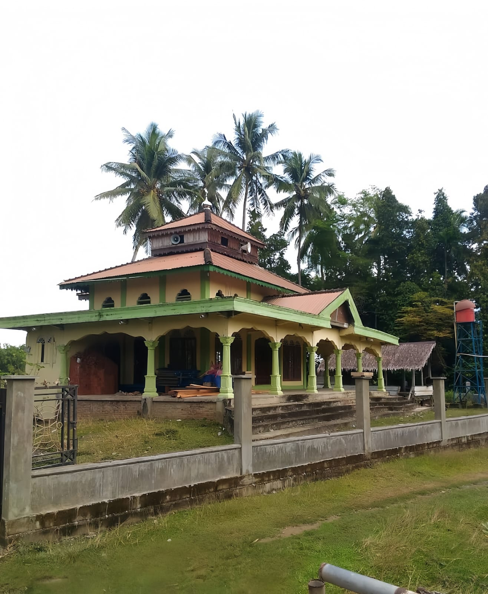
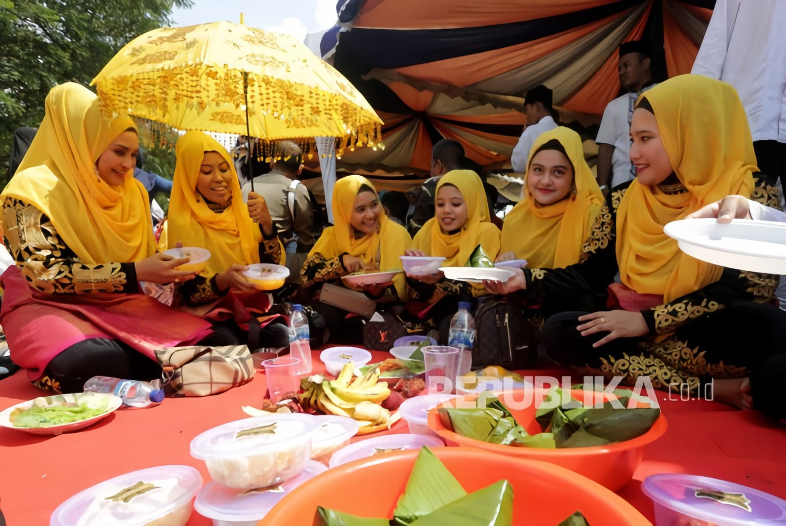

Dokumentasi berbagai kegiatan sosial, budaya, dan pembangunan yang dijalankan oleh masyarakat Desa Bluek Lamkabu.

Seluruh warga bergotong royong membersihkan jalan, selokan, dan fasilitas umum desa menjelang musim hujan demi menjaga kebersihan lingkungan bersama.

Kegiatan pengajian rutin bulanan yang dihadiri oleh seluruh lapisan masyarakat untuk memperkuat silaturahmi dan meningkatkan keimanan bersama.

Pelaksanaan posyandu bulanan sekaligus pemeriksaan kesehatan gratis untuk ibu hamil, balita, dan lansia warga desa bekerja sama dengan Puskesmas setempat.

Renovasi dan perluasan menasah sebagai pusat kegiatan masyarakat yang lebih representatif, nyaman, dan modern untuk seluruh warga.

Peringatan Maulid Nabi secara meriah dengan zikir akbar, ceramah agama, dan santapan bersama yang menyatukan seluruh warga dalam nuansa islami yang khidmat.